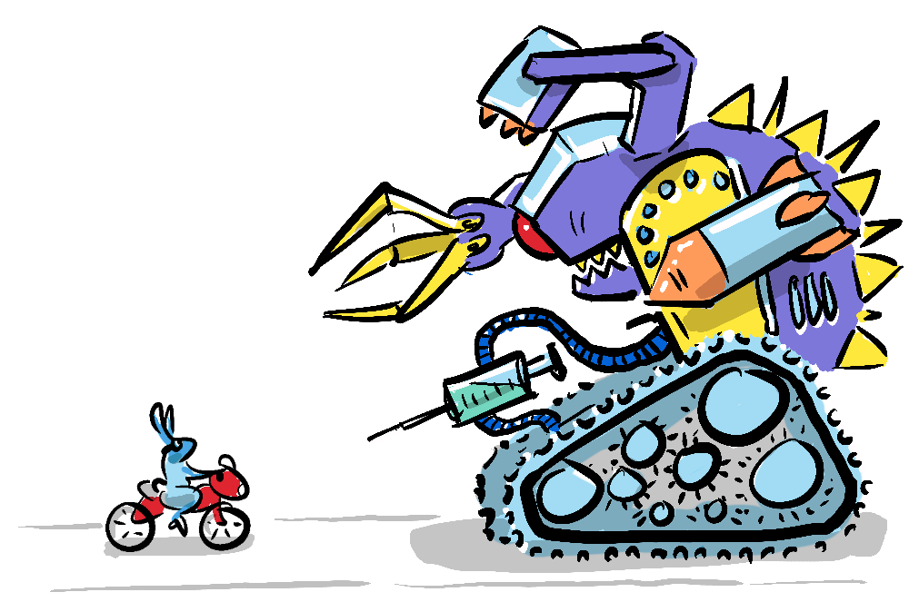

~ what is alignment? ~
When I began exploring non-zero-sum games, I soon discovered that achieving win-win scenarios in the real world is essentially about one thing - the alignment of interests.
If you and I both want the same result, we can work together to achieve that goal more efficiently, and create something that is greater than the sum of its parts. However, if we have different interests or if we are both competing for the same finite resource then we are misaligned, and this can lead to zero-sum outcomes.

You may have heard the term "alignment" used in the current discourse around existential risk regarding AI, where a key issue is The Alignment Problem or the problem of Goal Alignment which concerns the potential misalignment of goals between humanity and artificial general intelligence (AGI) - a flexible general purpose intelligence, that may have its own motivations and is able to design its own goals.
The argument considers a world where AGI, having decoupled itself from dependency on humans, overtakes human intelligence and develops goals that are at odds with humanity. The most obvious risk is a competition for resources like land, energy or computational capacity, where AGI might attempt to overthrow humanity taking the zero-sum perspective that it's them or us.
But more interesting is the possibility that without developing its own ultimate goals an AGI may develop instrumental goals that help it achieve a directive given by us. For instance, Nick Bostrom's paperclip robot is given the directive to create paperclips, and goes ahead converting all matter into paperclips, and in the process destroys all life on earth.

I spent some time with the ideas of Nick Bostrom, Max Tegmark, David Chalmers and other experts in the field while editing the documentary We need to talk about AI which explored the existential risk posed by the coming AI revolution. Now, one of the benefits of documentary editing (my day job) is that I get to study people at the top of their field and absorb a mass of information that, while it might not make the final cut, paints a vivid and nuanced picture of an issue. In this case, there was a consensus that a key stumbling block in designing AGI that is aligned with humanity's interests is the fact that we cant agree on what humanity's interests are. One of the experts encapsulated this idea in the statement...
We [humanity] need a plan, and we don't have a plan". - Bryan Johnson
But how can we come up with a plan if we can't agree on we want? We can often seem misaligned with each other, sometimes because we have different ideas about what we should be striving for, and at other times because we see our collective goals in zero-sum terms, believing that prosperity for some necessitates poverty for others, and that individual interests must be at odds with collective goals.
This is what I see as the key alignment problem facing humanity; the alignment between the individual and the collective - a misalignment that plays out in our adversarial political system with right & left wings vying for dominance rather than confluence. We'll be exploring this particular alignment problem and its consequences in Part 2.